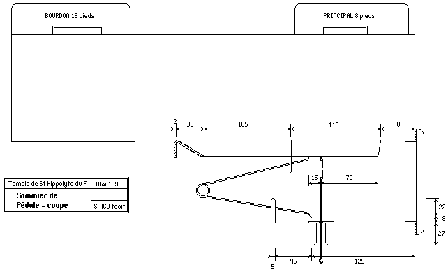
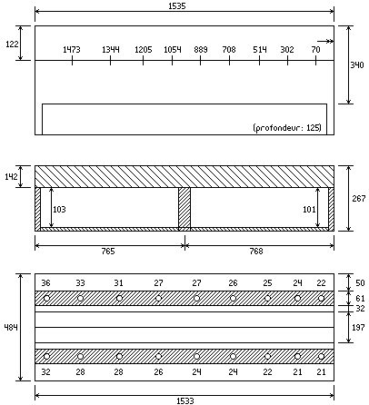

Grand Temple de l'Église Réformée
La mécanique.
Le sommier de
|
|
|



Coupe du sommier de Pédale avec sa composition, savoir :
Le sommier de
|
|
|
|
|||||||||||||||||||||
|
|||||||||||||||||||||
|
Dimensions du sommier (côté C#)
d'après un
relevé de Laurent
PLET1 fait en 1992.
|  |
|
||||||||||||||||||||||||||||||||||||||||

| Sommier du côté C | Sommier du côté C# | |||||
|---|---|---|---|---|---|---|
| Largeurs des gravures |
Division du sommier |
Largeurs des gravures |
Division du sommier |
|||
| 71.0 | 71.0 | |||||
| C 1 | 35.00 | 230.0 | C# 1 | 33.00 | 232.0 | |
| D 1 | 33.00 | 212.0 | Eb 1 | 32.00 | 210.0 | |
| E 1 | 31.00 | 195.0 | F 1 | 29.00 | 195.0 | |
| F# 1 | 28.00 | 180.0 | G 1 | 28.00 | 165.0 | |
| G# 1 | 27.00 | 165.0 | A 1 | 26.00 | 152.0 | |
| Bb 1 | 26.00 | 150.0 | B 1 | 25.00 | 148.0 | |
| C 2 | 25.00 | 140.0 | C# 2 | 25.00 | 138.0 | |
| D 2 | 23.00 | 128.0 | Eb 2 | 25.00 | 130.0 | |
| E 2 | 21.00 | 71.0 | F 2 | 22.00 | 71.0 | |
| Sommier du côté C | Sommier du côté C# | ||||
|---|---|---|---|---|---|
| Largeurs | Épaisseurs | Largeurs | Épaisseurs | ||
| Bourdon 16' | 145.0 | 27.0 | 140.0 | 30.0 | |
| Principal 8' | 135.0 | 25.0 | 135.0 | 25.0 | |
| Sommier du côté C | Sommier du côté C# | ||
|---|---|---|---|
| Bourdon 16' | 58.0 | 59.0 | |
| Principal 8' | 58.0 | 59.0 |
Note :
(1) Laurent PLET, Rapport sur la restauration de l'orgue BEAUCOURT et VOEGELI du Temple Réformée de Saint-Hippolyte du Fort (Gard).